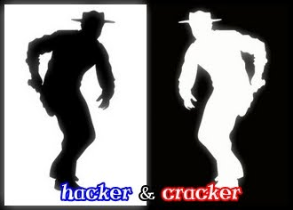

Era Hacker(){
i++
Hacker é um termo usado para uma pessoa que é "um programador nato" ou também, de acordo com a mídia, significa "uma pessoa que tenta quebrar códigos de segurança de sistemas computacionais".

O significado da palavra Cracker é bem parecido com o significado de Hacker. Cracker também é uma pessoa com habilidades significantes sobre programação, entretanto, ele é responsável por roubar informações sigilosas, criar programas eficientes capazes de piratear outros programas e jogos, e causar ataques em massa através da internet com o intúito de travar servidores e fazer com que os seus donos percam muito dinheiro por isso. Conheça um pouco sobre os esses mestres da quebra de segurança e seus principais ataques.
O termo hacker originou-se da palavra phreak (acrônimo de phone hacker) que eram aquelas pessoas que estudavam os sistemas de telefonia e com isso conseguiam fazer ligações de graça. Nessa época os sistemas informatizados eram restritos apenas aos envolvidos na computação, nos grandes Centros de Processamento de Dados(CPDs) de empresas e universidades.
Há muita controvérsia em relação à palavra hacker. Na sua origem, nos anos 60, era usada para designar as pessoas que se interessavam em programar computadores. Passados mais de quarenta anos, após o surgimento do computador pessoal e da Internet, o sentido da palavra hacker mudou e hoje ela é usada nos noticiários para definir invasores de sistemas alheios e até autores de crimes eletrônicos, para desespero dos hackers originais. Os hackers da velha guarda defendem a sua categoria seguindo um código de ética.
Há até a tentativa de classificar os hackers como pessoas que promovem a liberdade de expressão e de informações, e os crackers como causadores de prejuízo. Mas essa classificação também gera uma confusão de sentidos. A palavra cracker, vem do verbo em inglês "to crack", significando, aqui, quebrar códigos de segurança. Mas, muitas vezes para promover a livre informação é preciso "crakear", fazendo do legítimo hacker, também um cracker.
Os hackers, em geral, partem do princípio de que todo sistema de segurança tem uma falha e a função deles é encontrar essa porta, seja qual for a finalidade. Um programador de computador experiente é capaz de desenvolver várias habilidades como comandar computadores alheios à distância, fazer alterações em sites, invadir sistemas de empresas e governos e ter acesso a diversos tipos de informação.
White Hats: Seguem a mesma linha de pensamento original do hacking. Gostam apenas de saber e conhecer mais das coisas, principalmente as fechadas ao público. Para essas pessoas, aprender é a diversão mais importante do mundo. No mundo da segurança de sofware, os hackers éticos são os responsáveis por "informar" as grandes empresas de vulnerabilidades existentes em seus produtos. O hacker ético defende o conhecimento em prol de todos, portanto não o utiliza para prejudicar outras pessoas ou companhias.
Gray Hats: O termo Grey Hat, na comunidade hacker, refere-se a um hacker habilidoso com atividades que ficam entre um White hat e um Black hat. Isso nos leva a entender que eles as vezes fazem atos ilegais, porém com boas intenções, por exemplo em encontrar falhas de segurança. Eles geralmente não utilizam o hacking para o bem pessoal ou tem más intensões, mas as vezes eles cometem crimes durante o seu percurso na exploração tecnológica na intenção de alcançar uma segurança melhor de um sistema.
Black Hats: Assim como os White Hats, os Black Hats também são movidos pela curiosidade. O que os distingue é o que cada um faz com a informação e o conhecimento. O Black Hat vê poder na informação e no que ele sabe fazer. São aqueles hackers que descobrem uma vulnerabilidade em um produto comercial ou livre e não contam para ninguém até que eles próprios criem meios de obter dados sigilosos de outras pessoas e empresas explorando a vulnerabilidade recém-descoberta.
Trojan: O cavalo-de-tróia, ou trojan-horse, é um programa disfarçado que executa alguma tarefa maligna. Um exemplo: o usuário roda um jogo que conseguiu na Internet. O jogo secretamente instala o cavalo de tróia, que abre uma porta TCP do micro para invasão. Alguns trojans populares são NetBus, Back Orifice e SubSeven. Há também cavalos-de-tróias dedicados a roubar senhas e outros dados sigilosos.
Spyware: Spyware consiste no software de computador que recolhe a informação sobre um usuário do computador e transmite então esta informação a uma entidade externa sem o conhecimento ou o consentimento informado do usuário.
Worm: É um programa auto-replicante, semelhante a um vírus. O vírus infecta um programa e necessita deste programa hospedeiro para se propagar, o worm é um programa completo e não precisa de outro programa para se propagar.
Vírus: São pequenos programas criados para causarem algum tipo de dano a um computador. Este dano pode ser lentidão, exclusão de arquivos e até a inutilização do Sistema Operacional.
Phishing: Fraude virtual que chega por e-mail. Tenta convencer o usuário de que ele precisa preencher um formulário com seus dados ou clicar em um determinado link para baixar um arquivo. O arquivo, é claro, será um vírus. E o site, se acessado, roubará todos os dados digitados.
Engenharia Social: Segundo Kevin Mitnick, um dos maiores hackers da história que hoje trabalha otimizando e aperfeiçoando sistemas de segurança em empresas particulares e governamentais por todo o mundo, a maior falha de segurança de uma empresa é o fator ser humano. A engenharia social diz respeito a exatamente isso, práticas utilizadas para obter acesso a informações importantes ou sigilosas em organizações ou sistemas por meio da enganação ou exploração da confiança das pessoas.
Segundo o especialista em segurança Denny Roger, em uma entrevista para o Portal Tecnologia, atualmente os crackers estão focados em clonar cartões de crédito, roubar senhas e a chave de segurança (token) e aplicar práticas de engenharia social em clientes de bancos. Ele conclui que os ataques não param de evoluir, as tecnologias de segurança não estão acompanhando a evolução dos ataques na internet e as empresas precisam investir em tecnologias conhecidas como Web Application Firewalls e Sigle Sign-on combinado com certificados digitais e tokens.
Referencias:
Olhar Digital
G1 - Globo
CCUEC/UNICAMP
Search Security
Aprenda do Zero
}